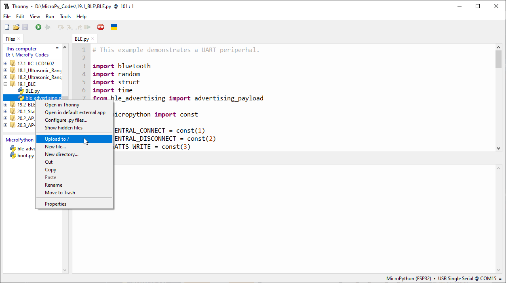
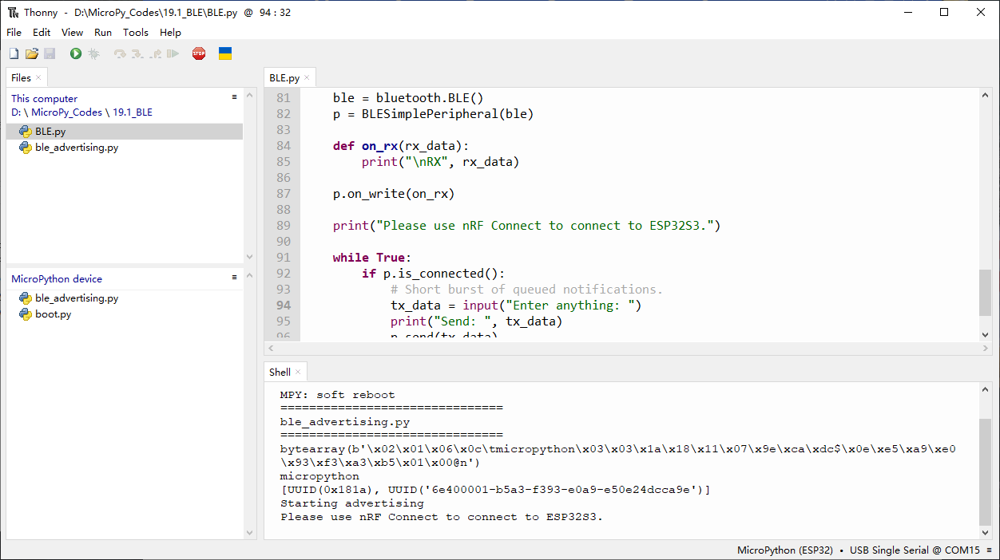
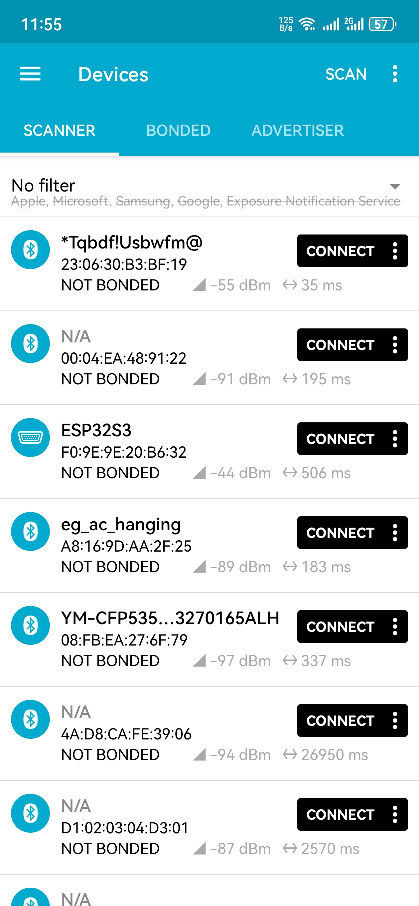
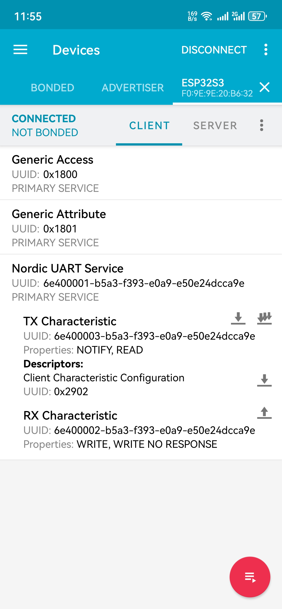
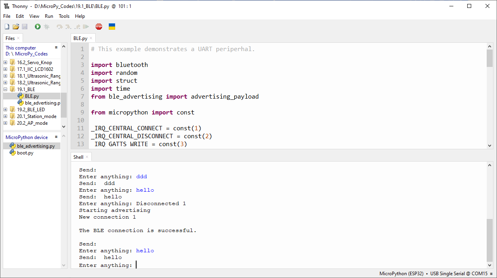
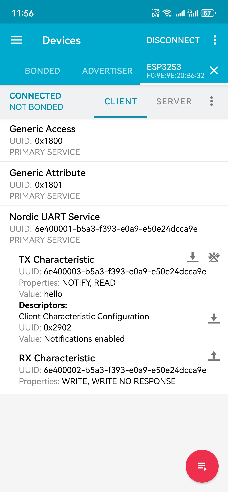
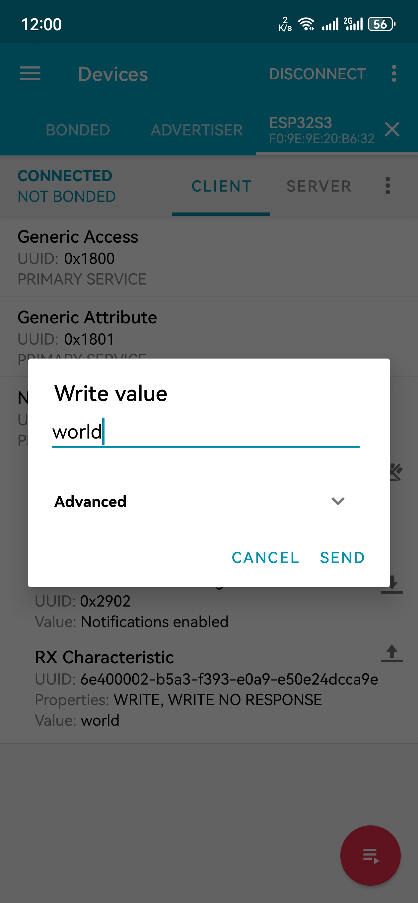
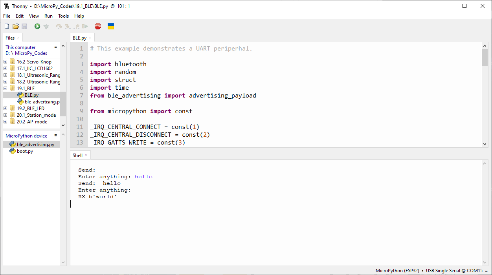
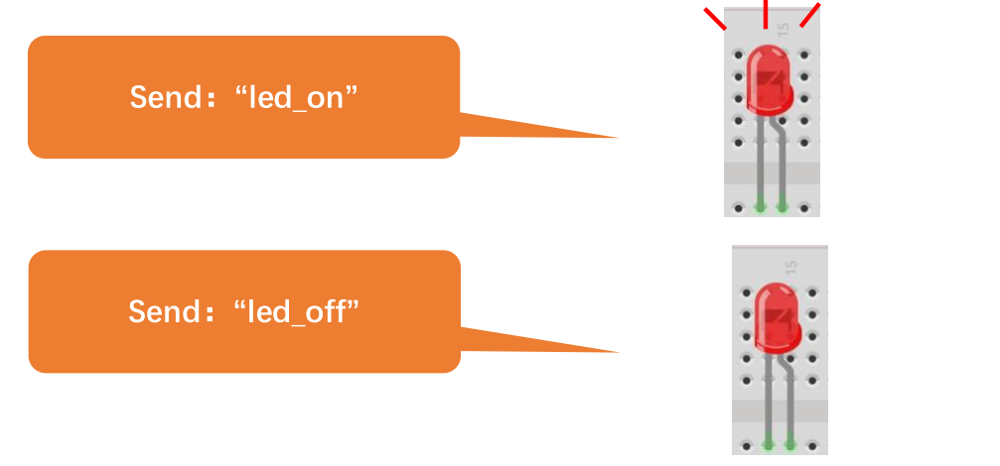
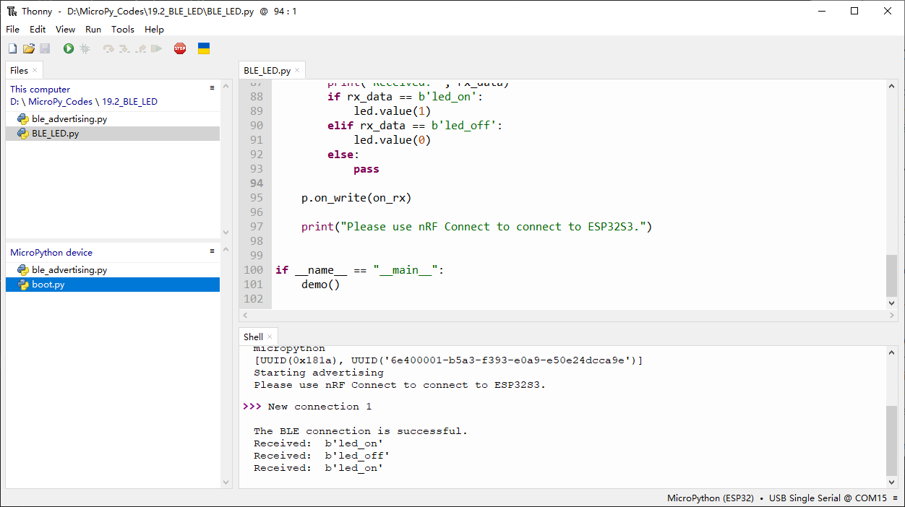

Chapter 19 Bluetooth
This chapter mainly introduces how to make simple data transmission through Bluetooth of ESP32-S3 WROOM and mobile phones.
Project 19.1 Bluetooth Low Energy Data Passthrough
Component List
ESP32-S3-WROOM x1
Type C USB Cable x1
Connect

nRF Connect
In this class, we will use the nRF Connect software for Bluetooth debugging.
Android users can download it from this link: nRF Connect for Android
iPhone users can download it from this link: nRF Connect for iPhone

Code
Move the program folder “Super_Starter_Kit_for_ESP32_S3/Python/Python_C odes” to disk(D) in advance with the path of “D:/Micropython_Codes”.
Open “Thonny”, click “This computer” >> “D:” >> “Micropython_Codes” >> “19.1_BLE”. Select “ble_advertising.py”, right click your mouse to select “Upload to /”, wait for “ble_advertising.py” to be uploaded to ESP32-S3 and then double click “BLE.py”.
19.1_BLE
Click run for BLE.py.
Turn ON Bluetooth on your phone, and open the nrf-connect APP.
In the Scan page, swipe down to refresh the name of Bluetooth that the phone searches for. Click ESP32S3.
 After Bluetooth is connect successfully, Shell will printer the information.

Click on “Nordic UART Service”. The TX characteristic shows the information you receive, and the RX characteristic is for sending information.
Note
If nrf-connect is not receiving any messages, you can turn off the multi-arrow to the right of the TX characteristic (it usually turns off automatically when messages are received).
You can type “Hello” in Shell and press “Enter” to send.
And then you can see the mobile Bluetooth has received the message.
Similarly, you can select the arrow to the right of the “RX characteristic” to send a message. Here, we enter “world” and click to send.
You can check the message from Bluetooth in “Shell”.
And now data can be transferred between your mobile phone and computer via ESP32S3.
The following is the program code:
# This example demonstrates a UART periperhal.
import bluetooth
import random
import struct
import time
from ble_advertising import advertising_payload
from micropython import const
_IRQ_CENTRAL_CONNECT = const(1)
_IRQ_CENTRAL_DISCONNECT = const(2)
_IRQ_GATTS_WRITE = const(3)
_FLAG_READ = const(0x0002)
_FLAG_WRITE_NO_RESPONSE = const(0x0004)
_FLAG_WRITE = const(0x0008)
_FLAG_NOTIFY = const(0x0010)
_UART_UUID = bluetooth.UUID("6E400001-B5A3-F393-E0A9-E50E24DCCA9E")
_UART_TX = (
bluetooth.UUID("6E400003-B5A3-F393-E0A9-E50E24DCCA9E"),
_FLAG_READ | _FLAG_NOTIFY,
)
_UART_RX = (
bluetooth.UUID("6E400002-B5A3-F393-E0A9-E50E24DCCA9E"),
_FLAG_WRITE | _FLAG_WRITE_NO_RESPONSE,
)
_UART_SERVICE = (
_UART_UUID,
(_UART_TX, _UART_RX),
)
class BLESimplePeripheral:
def __init__(self, ble, name="ESP32S3"):
self._ble = ble
self._ble.active(True)
self._ble.irq(self._irq)
((self._handle_tx, self._handle_rx),) = self._ble.gatts_register_services((_UART_SERVICE,))
self._connections = set()
self._write_callback = None
self._payload = advertising_payload(name=name, services=[_UART_UUID])
self._advertise()
def _irq(self, event, data):
# Track connections so we can send notifications.
if event == _IRQ_CENTRAL_CONNECT:
conn_handle, _, _ = data
print("New connection", conn_handle)
print("\nThe BLE connection is successful.")
self._connections.add(conn_handle)
elif event == _IRQ_CENTRAL_DISCONNECT:
conn_handle, _, _ = data
print("Disconnected", conn_handle)
self._connections.remove(conn_handle)
# Start advertising again to allow a new connection.
self._advertise()
elif event == _IRQ_GATTS_WRITE:
conn_handle, value_handle = data
value = self._ble.gatts_read(value_handle)
if value_handle == self._handle_rx and self._write_callback:
self._write_callback(value)
def send(self, data):
for conn_handle in self._connections:
self._ble.gatts_notify(conn_handle, self._handle_tx, data)
def is_connected(self):
return len(self._connections) > 0
def _advertise(self, interval_us=500000):
print("Starting advertising")
self._ble.gap_advertise(interval_us, adv_data=self._payload)
def on_write(self, callback):
self._write_callback = callback
def demo():
ble = bluetooth.BLE()
p = BLESimplePeripheral(ble)
def on_rx(rx_data):
print("\nRX", rx_data)
p.on_write(on_rx)
print("Please use nRF Connect to connect to ESP32S3.")
while True:
if p.is_connected():
# Short burst of queued notifications.
tx_data = input("Enter anything: ")
print("Send: ", tx_data)
p.send(tx_data)
if __name__ == "__main__":
demo()
Project 19.2 Bluetooth Control LED
In this section, we will control the LED with Bluetooth.
Component List
ESP32-S3-WROOM x1
GPIO Extension Board x1
830 Tie-Points Breadboard x1
Resistor 220Ω x1
LED x1
Jumper Wire x2
Type C USB Cable x1
Connect
Connect ESP32-S3 to the computer using a USB cable.

Code
Move the program folder “Super_Starter_Kit_for_ESP32_S3/Python/Python_Codes” to disk(D) in advance with the path of “D:/Micropython_Codes”. Open “Thonny”, click “This computer” >> “D:” >> “Micropython_Codes” >> “19.2_BL E_LED”. Select “ble_advertising.py”, right click your mouse to select “Upload t o /”, wait for “ble_advertising.py” to be uploaded to ESP32-S3 and then double click “BLE_LED.py”
19.2_BLE_LED
Compile and upload code to ESP32S3. The operation of the APP is the same as 19.1, you only need to change the sending content to “led_on” and “led_off” to operate LEDs on the ESP32S3.
Data sent from mobile APP:
You can check the message sent by Bluetooth in “Shell”.
The phenomenon of LED
Attention: If the sending content isn’t “led_on’ or “led_off”, then the state of LED will not change. If the LED is on, when receiving irrelevant content, it keeps on; Correspondingly, if the LED is off, when receiving irrelevant content, it keeps off.
The following is the program code:
# This example demonstrates a UART periperhal.
import bluetooth
import random
import struct
import time
from ble_advertising import advertising_payload
from machine import Pin
from micropython import const
_IRQ_CENTRAL_CONNECT = const(1)
_IRQ_CENTRAL_DISCONNECT = const(2)
_IRQ_GATTS_WRITE = const(3)
_FLAG_READ = const(0x0002)
_FLAG_WRITE_NO_RESPONSE = const(0x0004)
_FLAG_WRITE = const(0x0008)
_FLAG_NOTIFY = const(0x0010)
_UART_UUID = bluetooth.UUID("6E400001-B5A3-F393-E0A9-E50E24DCCA9E")
_UART_TX = (
bluetooth.UUID("6E400003-B5A3-F393-E0A9-E50E24DCCA9E"),
_FLAG_READ | _FLAG_NOTIFY,
)
_UART_RX = (
bluetooth.UUID("6E400002-B5A3-F393-E0A9-E50E24DCCA9E"),
_FLAG_WRITE | _FLAG_WRITE_NO_RESPONSE,
)
_UART_SERVICE = (
_UART_UUID,
(_UART_TX, _UART_RX),
)
class BLESimplePeripheral:
def __init__(self, ble, name="ESP32S3"):
self._ble = ble
self._ble.active(True)
self._ble.irq(self._irq)
((self._handle_tx, self._handle_rx),) = self._ble.gatts_register_services((_UART_SERVICE,))
self._connections = set()
self._write_callback = None
self._payload = advertising_payload(name=name, services=[_UART_UUID])
self._advertise()
def _irq(self, event, data):
# Track connections so we can send notifications.
if event == _IRQ_CENTRAL_CONNECT:
conn_handle, _, _ = data
print("New connection", conn_handle)
print("\nThe BLE connection is successful.")
self._connections.add(conn_handle)
elif event == _IRQ_CENTRAL_DISCONNECT:
conn_handle, _, _ = data
print("Disconnected", conn_handle)
self._connections.remove(conn_handle)
# Start advertising again to allow a new connection.
self._advertise()
elif event == _IRQ_GATTS_WRITE:
conn_handle, value_handle = data
value = self._ble.gatts_read(value_handle)
if value_handle == self._handle_rx and self._write_callback:
self._write_callback(value)
def send(self, data):
for conn_handle in self._connections:
self._ble.gatts_notify(conn_handle, self._handle_tx, data)
def is_connected(self):
return len(self._connections) > 0
def _advertise(self, interval_us=500000):
print("Starting advertising")
self._ble.gap_advertise(interval_us, adv_data=self._payload)
def on_write(self, callback):
self._write_callback = callback
def demo():
ble = bluetooth.BLE()
p = BLESimplePeripheral(ble)
led=Pin(2,Pin.OUT)
def on_rx(rx_data):
print("Received: ", rx_data)
if rx_data == b'led_on':
led.value(1)
elif rx_data == b'led_off':
led.value(0)
else:
pass
p.on_write(on_rx)
print("Please use nRF Connect to connect to ESP32S3.")
if __name__ == "__main__":
demo()